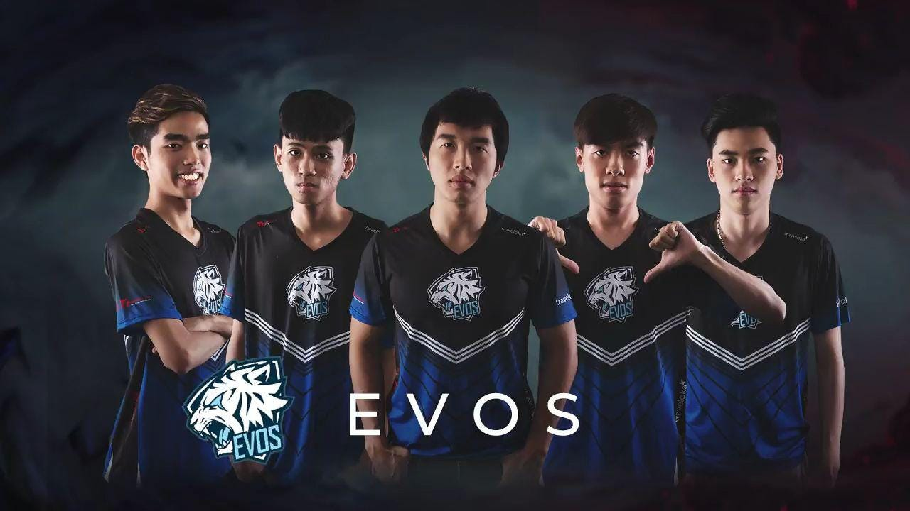
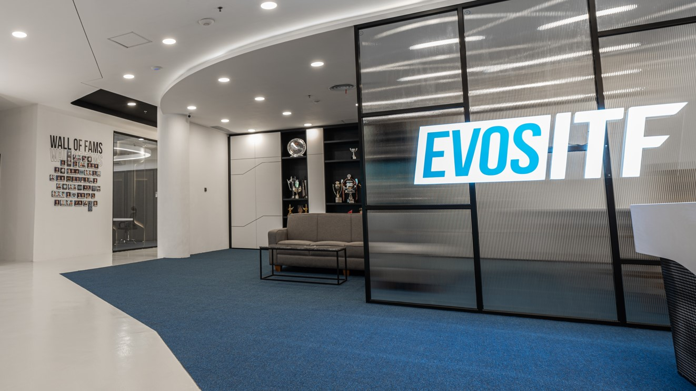
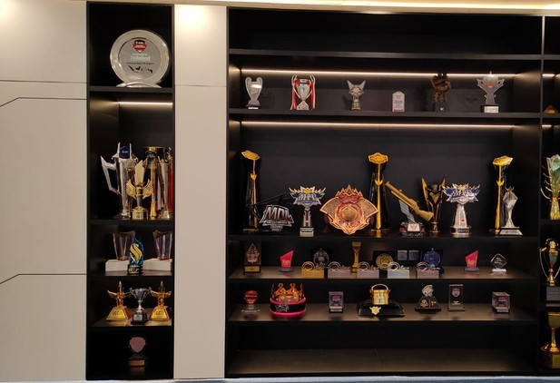

Sejarah

Divisi pertama adalah Dota 2, yang lahir dari akuisisi tim Zero Latitude setelah turnamen yang diselenggarakan oleh EVOS karena juara pertama dan kedua sudah memiliki sponsor masing-masing,
maka EVOS memilih tim Zero Latitude yang menempati posisi ketiga untuk diakuisisi sebagai tim pertama mereka.
EVOS resmi didirikan pada Agustus 2016, dan pembentukan divisi Dota 2 menjadi tanda lahirnya EVOS sebagai organisasi esports profesional.
Nama "EVOS" berasal dari kata Evolution, mencerminkan semangat kebaruan dan perkembangan. Warna putih dan biru dari logonya melambangkan kesucian dan loyalitas, sedangkan lambang macan putih mencerminkan keberanian dan kekuatan—serta zodiak Leo milik sang pendiri
Setahun setelah pendirian, EVOS mulai memperluas cakupan game mereka. Pada tahun 2017, mereka telah membentuk tim untuk berbagai divisi seperti Mobile Legends, Arena of Valor (AOV), Point Blank, dan divisi khusus Vietnam untuk League of Legends (LoL), AOV Vietnam, hingga PUBG.
Divisi lainnya, seperti Dota 2 Academy, juga ikut berdiri seiring ekspansi ini.EVOS dibangun sebagai lebih dari sekadar tim esports—misi utamanya adalah menjadi change-maker, yang membentuk pemain menjadi pribadi berdampak, profesional, dan kompetitif.
Mereka ingin memberikan peluang nyata dan perubahan positif bagi para talenta muda
Evos ITF

Pada Oktober 2021, EVOS resmi membuka EVOS Integrated Training Facility (ITF) yang berlokasi di One Belpark Mall, Jakarta Selatan.
Dibangun sejak Mei 2021, fasilitas ini menggantikan gaming house tradisional, dengan luas sekitar 765 m² dan terdiri dari 18 ruangan seperti lobi, pantry, ruang meeting, streaming room, hingga leisure area dan studio konten
Dengan ITF, EVOS menciptakan ekosistem terintegrasi bagi pro-player, staf, dan tim kreatif untuk kolaborasi dan latihan yang lebih efektif.
Prestasi

EVOS Esports adalah organisasi esports multinasional asal Indonesia yang berdiri pada 21 Agustus 2016 dan kini menjadi salah satu tim paling berpengaruh di Asia Tenggara.
Prestasinya mencakup berbagai divisi game: di Mobile Legends: Bang Bang, EVOS Legends menorehkan sejarah sebagai juara dunia M1 World Championship 2019, juara MPL Indonesia Season 4 & 7, runner-up MPL ID Season 9, serta peraih gelar di berbagai turnamen internasional. Di Free Fire, EVOS Capital (Indonesia) menjuarai Free Fire World Cup 2019 di Bangkok, menjadi tim Indonesia pertama yang meraih gelar dunia. Prestasi berlanjut dengan EVOS Phoenix (Thailand) yang menjuarai Free Fire World Series 2021 di Singapura dan FFWS 2022 di Bangkok, serta EVOS Divine yang meraih gelar Free Fire Esports World Cup 2025 di Riyadh. Di League of Legends, EVOS Vietnam memenangkan VCS Spring 2018 dan tampil di Mid-Season Invitational mewakili VCS. Divisi PUBG Mobile sempat meraih gelar nasional dan tampil di ajang internasional, sementara di Arena of Valor EVOS SG dan EVOS TH menorehkan gelar liga lokal dan regional. Divisi Wild Rift juga sukses menjuarai turnamen tingkat Asia Tenggara. EVOS memulai perjalanannya dari divisi Dota 2 yang langsung aktif di turnamen internasional seperti MPGL 2016 sebelum berekspansi ke berbagai game lain.
Pada 2025, EVOS terpilih sebagai salah satu dari 40 klub mitra Esports World Cup, mengukuhkan statusnya sebagai organisasi dengan koleksi trofi membanggakan dari panggung lokal hingga dunia.
Liga Nasional
Sejak berdiri, EVOS Esports telah mengoleksi berbagai gelar juara di liga nasional dari beragam divisi game. Di Mobile Legends: Bang Bang, EVOS Legends berhasil meraih dua kali gelar juara MPL Indonesia, yaitu pada Season 4 (2019) dan Season 7 (2021). Divisi Free Fire juga menunjukkan dominasi dengan empat gelar Free Fire Master League: Season 1 (2020), Season 3 (2021), Season 5 Divisi 1 (2022), dan Season 8 Divisi 1 (2023) lewat skuad EVOS Divine. Di ranah PUBG Mobile, EVOS Reborn mencatat sejarah dengan menjuarai PMPL Indonesia Season 3 (2021). Sementara itu, di Arena of Valor, EVOS AOV meraih gelar ASL Season 3 (2019).
Rangkaian prestasi ini menunjukkan konsistensi EVOS sebagai salah satu organisasi esports paling sukses di Indonesia, tidak hanya di satu game, tetapi di berbagai cabang kompetisi.
Internasional
Di level internasional, EVOS Esports mencatatkan sejarah emas yang mengharumkan nama Indonesia dan Asia Tenggara. Pada 2019, EVOS Legends menjuarai M1 World Championship Mobile Legends di Malaysia, sekaligus EVOS Capital (Indonesia) merebut gelar Free Fire World Cup 2019 di Bangkok — menjadi tim Indonesia pertama yang menjuarai turnamen dunia Free Fire. Dominasi Free Fire berlanjut lewat EVOS Phoenix (Thailand) yang menjuarai Free Fire World Series 2021 di Singapura dan FFWS 2022 di Bangkok. Pada 2025, EVOS Divine kembali mengukir sejarah dengan menjuarai Free Fire Esports World Cup 2025 di Riyadh. Di League of Legends, EVOS Vietnam menjadi kampiun VCS Spring 2018 dan tampil di Mid-Season Invitational sebagai wakil Vietnam. Divisi lainnya juga mengoleksi gelar internasional, termasuk EVOS SG di Arena of Valor yang meraih gelar turnamen regional Asia Tenggara, serta EVOS Wild Rift yang menjuarai kejuaraan SEA.
Rangkaian prestasi ini menegaskan EVOS sebagai organisasi esports dengan kekuatan global di berbagai cabang game.